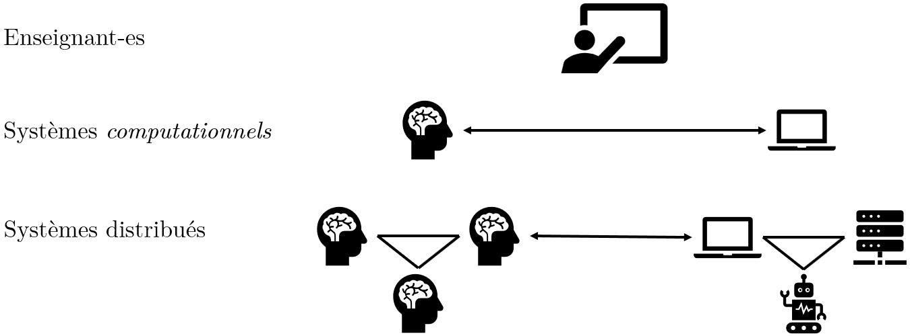
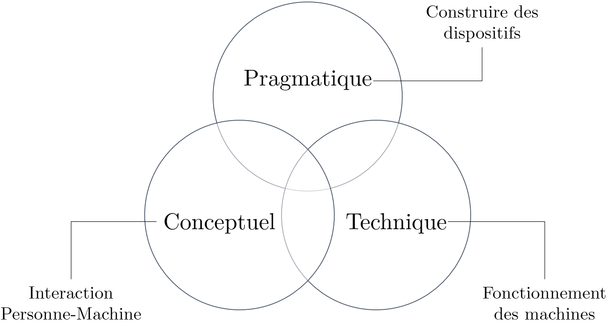
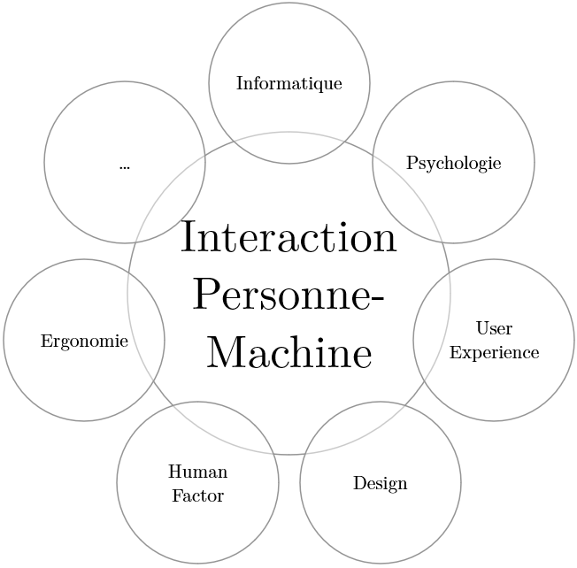
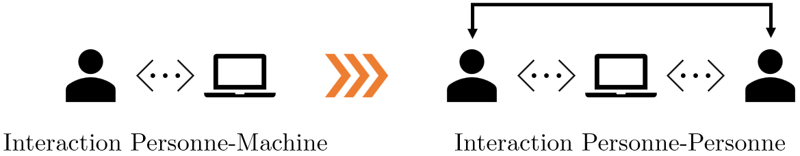
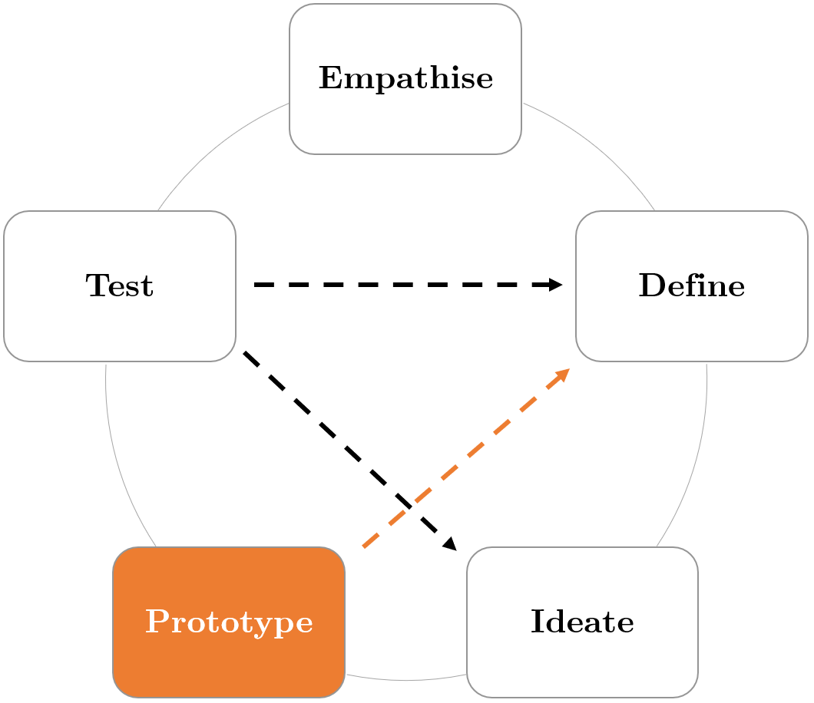
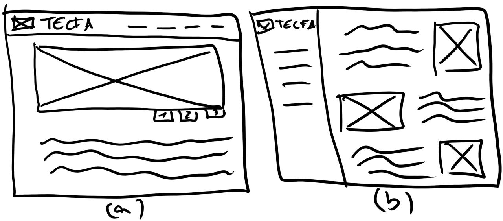
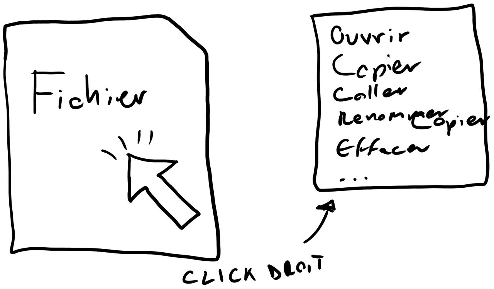
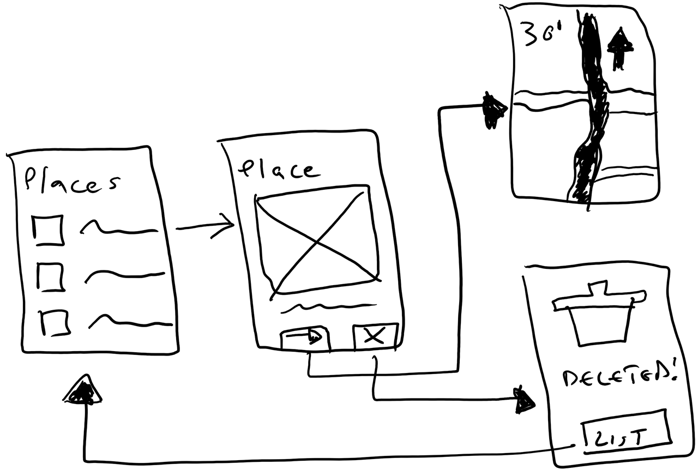
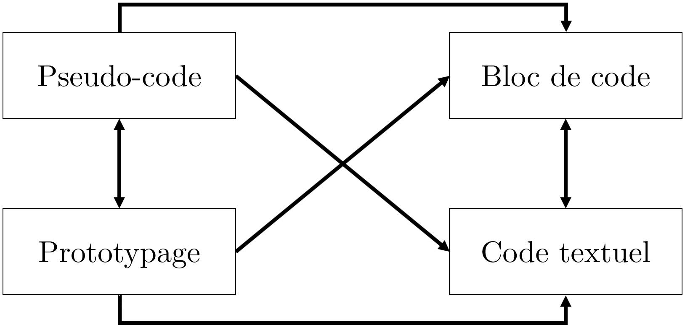
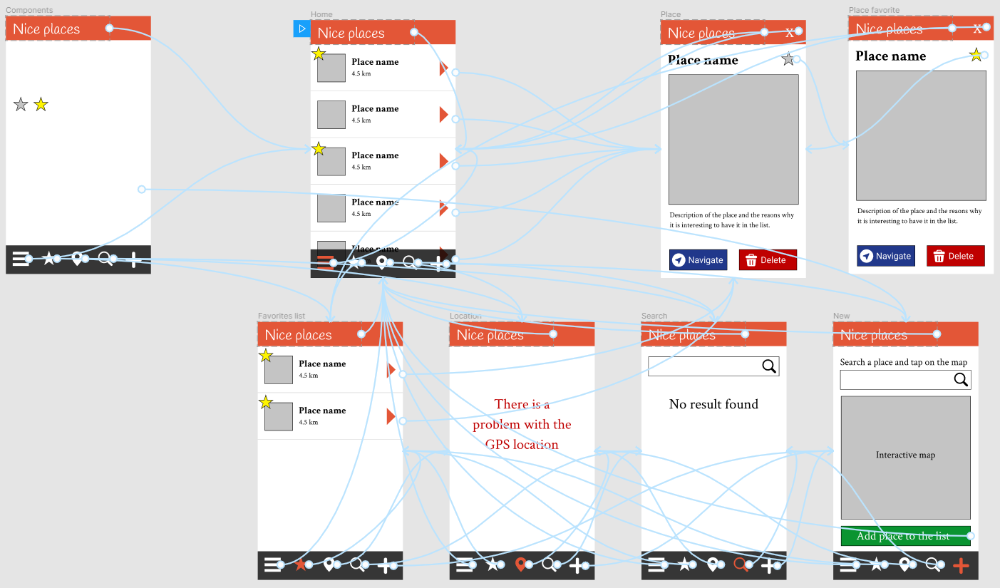

Interaction Personne-Machine (CO)
Mattia A. Fritz
TECFA, Université de Genève
Difficultés pour l'enseignement
Se trouver entre deux systèmes computationnels complexes et distincts, en plus distribués !
Différents parcours possibles
Quel rôle pour l'informatique ?
— Newell, Simon & Perils
Traduction libre
Quel rôle pour l'informatique ?
— Dijkstra
Traduction libre
Quel rôle pour l'informatique ?
— Shneiderman, 2002
Traduction libre
Définition générale
— Adapté de Wikipedia
Approche multidisciplinaire
Principe de base

Application à différents niveaux
L'interaction personne-machine couvre un large continuum d'applications qui vont du très spécifique à l'holistique.
Langages de programmation
Embodied interaction
Domaines d'application (1)

User eXperience (UX), méthode Agile, ...
Domaines d'application (2)
Passage à l'interaction distribuée : médiatisation informatique des interactions entre personnes.
Instructional designer, Évangéliste technologique, ...
Deux activités débranchées
-
Pseudo-code
Utiliser un langage intermédiaire entre langage humain et langage de programmation. -
Prototypage
Utiliser le dessin papier pour créer des interfaces et interactions d'artefacts informatiques.
Pseudo-code
Le pseudo-code permet d'appliquer et entraîner la pensée computationnelle dans un contexte plus relaxé (e.g. gestion des erreurs).
Langue naturelle
Langage formalisé
Exemple : jeu du morpion
- Demander un input dans l'une des 9 positions possibles.
-
Contrôler que la case n'est pas déjà occupée
- Si elle est occupée, demander un nouveau input et recommencer au point 1
-
Contrôler que le symbole appliqué soit différent du précédent
(pour garantir l'alternance)
- Si c'est le même, demander un nouveau input et recommencer au point 1
- ...
Prototypage
— Adapté de Wikipedia
Design Thinking
Degrés d'abstraction
Différentes finalités
Le prototypage peut être adopté avec des objectifs pédagogiques différents et non mutuellement exclusifs :
- Créativité / Design Thinking
- Remémoration / Consolidation
- Découverte / Réflexion
Créativité / Design Thinking
Dessiner plusieurs maquettes d'un artefact informatique.
Remémoration / Consolidation
Recréer un menu contextuel pour consolider les différentes actions possibles sur un fichier.
Découverte / Réflexion
Réfléchir sur les différents états et opérations (e.g. CRUD).
Simulation tangible
Brancher le débranché
Interactivité : liens entre écrans
Maquette interactive
Cliquez une fois sur la maquette pour pouvoir l'utiliser et l'ouvrir en plein écran avec la touche F. Pour passer à la slide suivante cliquez d'abord hors du cadre noir.